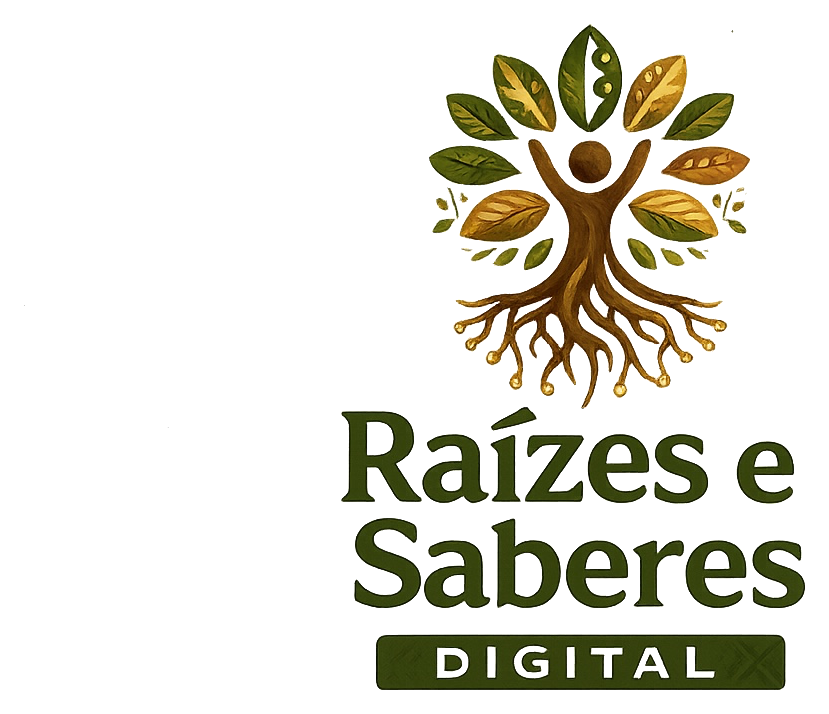

Gestao
Secretarias e gestores acompanham rede, escolas, indicadores e uso da plataforma.

Solicitar DemonstracaoEcossistema Educacional
Uma plataforma integrada para redes de ensino, escolas, professores e estudantes.
Home Premium V1.0 preparada para receber os textos oficiais e os assets definitivos da marca, mantendo uma experiencia institucional elegante para demonstracoes comerciais.

Ecossistema Educacional
A Home foi organizada para apresentar a Raizes e Saberes como um ecossistema educacional premium, com areas prontas para receber textos oficiais, imagens reais e mockups finais.
Secretarias e gestores acompanham rede, escolas, indicadores e uso da plataforma.
Alunos acessam livros digitais, atividades, biblioteca, videos e experiencias interativas.
Professores organizam turmas, acompanham desempenho e conduzem trilhas pedagogicas.
Formacao continuada, cursos, trilhas e certificados para evolucao docente.
Educacao Infantil
Esta area esta pronta para receber as capas oficiais da Educacao Infantil. As capas serao o principal elemento visual da secao quando os assets finais forem entregues.
Asset oficial pendente.
Asset oficial pendente.
Asset oficial pendente.
Asset oficial pendente.
Plataforma Digital
Estrutura preparada para demonstrar a plataforma em funcionamento, com painel, modulos, permissoes, relatorios e acompanhamento por perfil de usuario.
Biblioteca Digital
A secao foi preparada para receber o Book Viewer Preview, cards de acervo, recursos de leitura e acesso a conteudos digitais de apoio.
Universidade Raizes e Saberes
Area pronta para apresentar cursos, videoaulas, trilhas, certificados e acompanhamento da evolucao dos profissionais da educacao.
Espaco para cursos oficiais, cargas horarias e progresso.
Area preparada para emitir ou apresentar certificados da Universidade.
Espaco para aulas, modulos, professores e materiais complementares.
Avalia+
Secao pronta para demonstrar dashboards, comparativos, indicadores e relatorios do Avalia+.
Demonstracao institucional
Chamada final pronta para receber texto comercial oficial e materiais de demonstracao.
Demonstracao
Formulario funcional para solicitacao de apresentacao comercial. Os campos podem ser conectados futuramente ao Supabase, CRM ou ferramenta de atendimento.